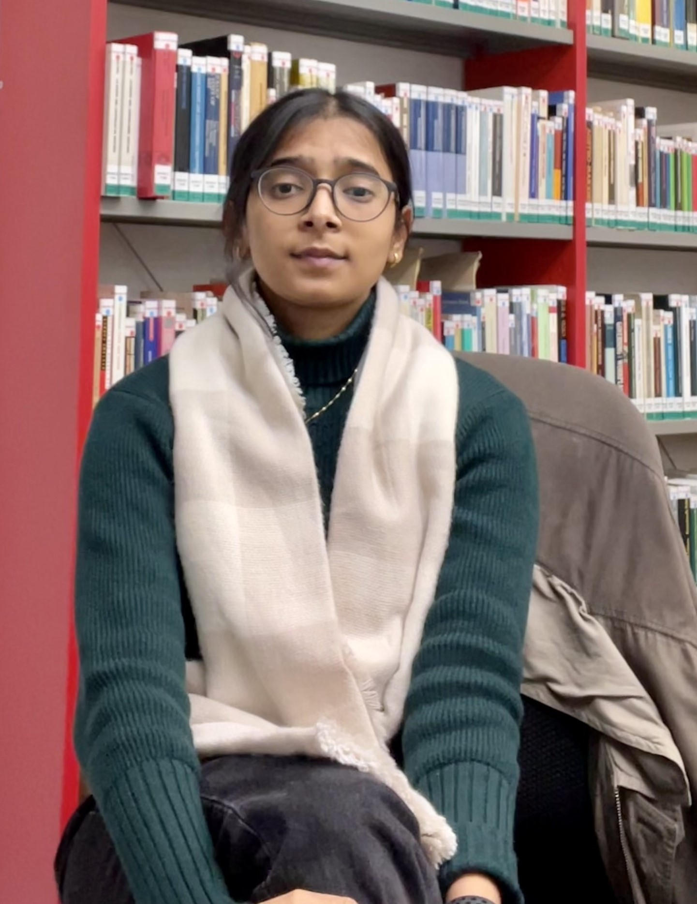

Greetings! My name is Riya Kejriwal. I recently graduated with a Master in Public Policy specialising in Policy Analysis from Hertie School in Berlin, Germany (Class of 2023). I hold a Bachelor in Commerce (Honours) from the University of Delhi with a minor in Economics.
I am very much into working with data to understand and address policy issues. I am good with R and currently making progress on Python skill. I am broadly interested in sustainability and climate policy, economic inequality and taxation, and behavioural economics. Access my CV here.
Here is my Spotify. I listen to a lot of other artists which aren't included in the playlists. My absolute favourites are Isak Danielson and Miley Cyrus. If you are into instrumental, try-out Ludovico Einaudi's compositions.
Currently reading The Red Deal and India is Broken. Favourites: Capital without Borders and A Brief History of Equality.
If you want to reach out, my contact is below.
r.kejriwal@hertie-school.org
@Riya__Kejriwal
github.com/RiyaKejriwal